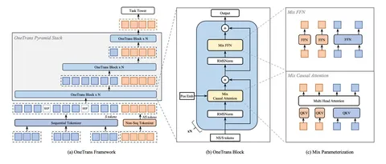

Сегодня разберём статью о OneTrans — нейросетевом ранкере от TikTok. Его можно было бы назвать аналогом HSTU от Meta* или TransAct от Pinterest, но ни на одну из этих работ авторы не ссылаются, упоминают только Wukong и RankMixer.
Исследователи называют свою разработку единой ранжирующей моделью в рамках каскадного рекомендательного стека, которая заменяет финальный ранкер за счёт того, что совмещает sequence-моделирование и взаимодействие признаков (feature interaction).
Классический подход к финальному ранжированию, ставший стандартом индустрии, обычно предполагает, что историю пользователя обрабатывают отдельно от обработки ручных счётчиков. Сначала входную последовательность событий пропускают через Sequence Modeling Block, где вытаскивают и сжимают информацию о пользователе, необходимую для построения рекомендаций. Потом сжатое представление попадает в Interaction-блок. Параллельно набор Non-Seq-фичей (например, ручные счëтчики) конкатенируют или каким-то другим способом подают в тот же Interaction-блок.
OneTrans одновременно моделирует и последовательные, и Non-Seq-входы внутри единой модели OneTrans. Архитектура ранкера — на схеме: последовательности (голубые блоки S на схеме) и non-seq (NS, оранжевые) айтемы токенизируют по отдельности. Блоки поведения пользователей разделяют специальными блоками [SEP], после чего единую последовательность подают на вход OneTrans Pyramid Stack. Внутри этой пирамиды последовательность S итеративно сжимают до тех пор, пока её длина не совпадёт с NS.
OneTrans Block — казуальный трансформер с RMSNorm, Mixed Causal Attention и Mixed FFN. Под Mixed авторы понимают смешанную параметризацию: у S-токенов общие QKV/FFN-матрицы, а каждый NS получает свои токен-специфичные веса.
По результатам экспериментов на индустриальных датасетах, OneTrans эффективно масштабируется с ростом параметров: систематиически обгоняет сильные бейзлайны и показывает рост на 5,68% per-user GMV в онлайн-A/B-тестах.
*Компания Meta, владеющая Instagram, признана экстремистской; её деятельность в России запрещена.
@RecSysChannel
Разбор подготовил
